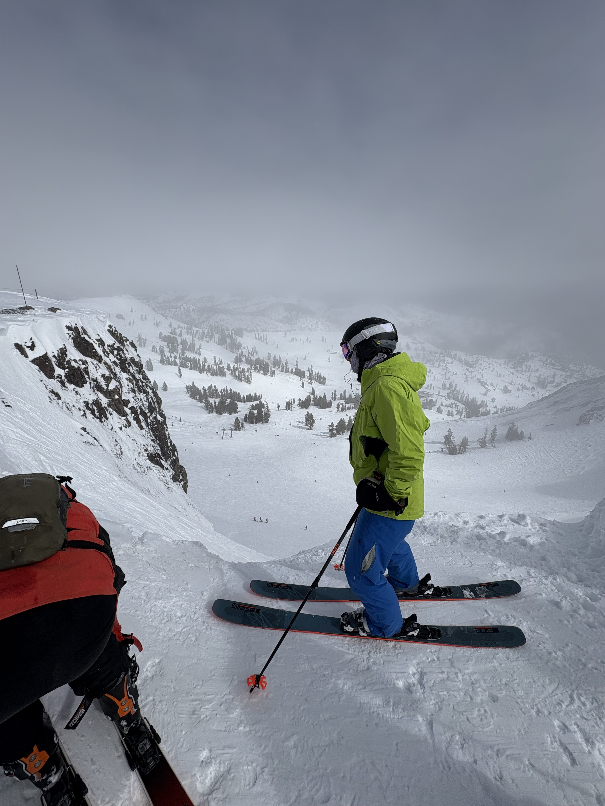

Math and data enthusiast, certified chill guy, checks pretty much every box ever written by anybody.
"tl;dr if you're exceptional, we'll create a role for you. simple as that."
I'll start serious before I get too carried away. Wordware fires me up and I'd love to contribute. I don't fit exactly into any of the roles listed on ashby, but I'm applying anyway so let's start brainstorming what role we can create.
Some logistics:
- my resume and contact info is linked in the top right corner of the page
- elevator pitch is at the bottom of the page
- i made a fun little wordware app here
- you can navigate to my more boring portfolio page by hitting the home button up top (or you can go there if you wanna win some bets on tonight's NBA games (w.i.p.))
Now the fun part
I'm going to cherry pick a few parts of your job page and show me fitting in.
"skiing down a gnarly double black diamond"
Here's a picture of some buddies and I about to send the Chimney at Palisades Tahoe.
"speaking in front of crowds"
Here's a picture of me presenting my research to a room full of "scary" professors and academics.
"you stay cool when everything's on fire"
Here's a picture of my house on fire a few weeks ago. I escaped by doing parkour out of my 3rd floor window (pictured).
"tackling impossible problems"
Emphasis on the tackling part, here's a video of how I'll be handling all my work.
And?
Here's the thing: while I love building things and my experiences position me most closely to "engineering," I'm self-aware enough to know that I don't have 4+ years of experience, nor am I a typescript or next.js expert.
So what's the plan?
Data and statistics are where I excel (not a pun cause excel sucks), extracting insights, making data-driven decisions, and improving processes. I love deep, technical problems, I'm creative as hell, a little too hard working, and I go/learn fast.
Moral of the story:
I think we should chat.
ps:"show us how to improve our product before we even talk", I've got some ideas based on my short usage for my aforementioned app